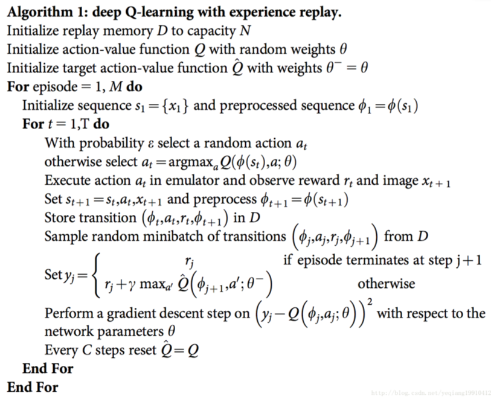
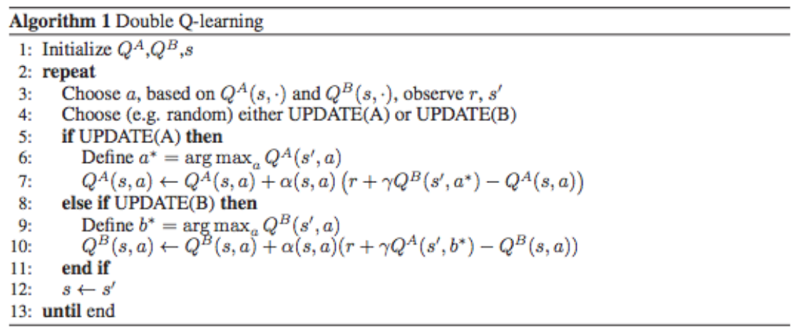
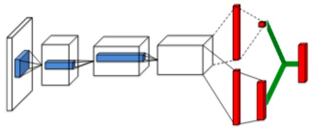
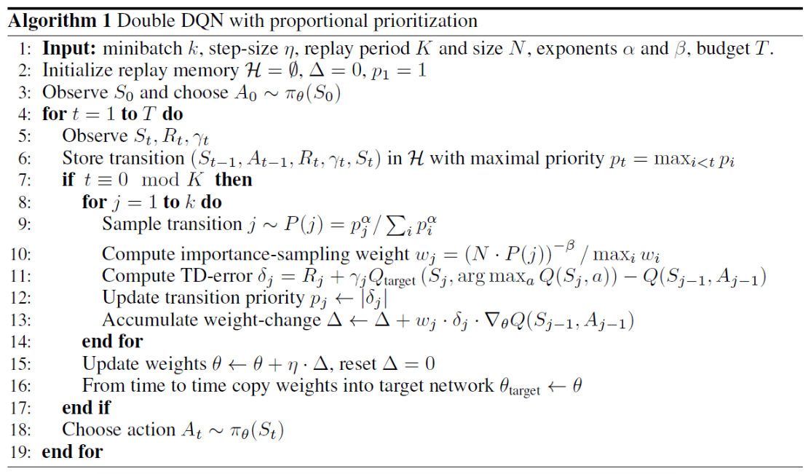
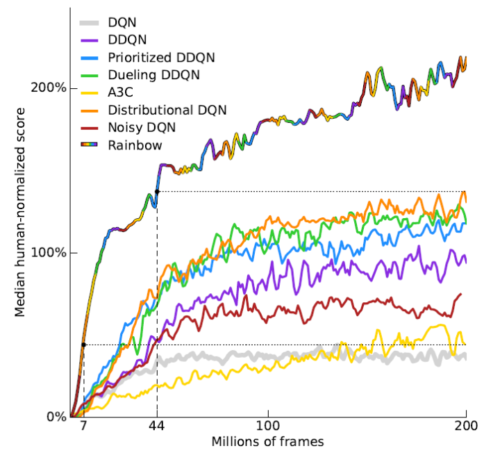

基于值函数的深度学习网络
-
DQN
- 深度强化学习的鼻祖式工作
-
解决了两个问题
- 一段时间内的训练数据具有较强的相关性，如果按照顺序进行训练，会对当前状态下的情况产生过拟合。通过将历史训练数据存在一个buffer里，通过随机抽取的方式进行训练，解决了这一问题。
- 首次证明了能够通过raw pixels解决游戏问题，对所有游戏通用
-
关键特点
- Q Learning + DNN
- Experience Replay
- Target Network
-
算法流程

-
Double DQN
-
核心思路
- DQN中的TD目标值\(r+\gamma max_{a}Q({s}’,a)\)存在max操作，会引入一个正向偏差
- 因此建模两个Q网络，一个用于选动作，一个用于评估动作：
- $$r+\gamma Q^{B}({s}',argmax_{a}Q^{A}({s}',a))$$
- 其实只要把DQN的target network也变成独立更新的就行了
-
算法流程

-
-
Dueling Network
-
核心思路

- 用一个网络，分别学习V函数和A(优势)函数，最后相加得到Q函数
-
优势
- 对于很多状态，不需要估计每个动作的Q值，每来一个样本都可以更新一次V函数，V函数的学习机会比Q函数高很多，- 泛化性能好，当新的动作进来时，不需要重新学习V，只需要重新学习A
- 减少了Q函数由于状态和动作维度差导致的噪声和突变
-
-
Prioritized Experience Replay
-
核心思路
- DQN是从memory中均匀的采样，有时候，我们希望更多的去采样对学习有帮助的片段，给不同的experience提供不同的权重
- 利用TD误差去衡量权重
- 需要使用sum-tree以及binary heap data structure去实现
- 为了保证新加入的样本至少被采样一次，新样本的TD误差会被设置为最大
- 类似于DP中的优先清理
- Experience Replay 使得更新不受限于实际经验的顺序
- Prioritized Experience Replay 使得更新不受限于实际经验的频率
-
存在问题
- TD 误差对噪声敏感
- TD 误差小的 transition 长时间不更新
- 过分关注 TD 误差大的 transition 丧失了样本多样性 使用某种分布采样了 Experience, 会引入 Bias
-
解决方法
- 两种变体：
- $$p_{i}=|\delta _{i}|+e$$
- 其中，\(\delta _{i}\)表示TD误差，\(e\)表示人为施加的噪声，通过这个噪声保证多样性
- \(p_{i}=\frac{1}{rank(i)}\)，序号的倒数来表示权重，对噪声的敏感度下降。简单的说，即使TD误差有0.1的误差，但顺序上依然是排第二，这时，误差就没有影响了。
- 重要性采样，消除Bias
- 两种变体：
-
算法流程

-
-
Rainbow
-
核心思想
- 将大量的前人的工作汇总实现，明确每一种改进所对应的效果，采用的工作有
- DQN
- Double DQN
- Dueling DQN
- Prioritized Experience Replay
- NoiseNet(Noisy Netwoks for Exploration, AAAI2018)
- Distributional RL(A Distributional Perspective on Reinforcement Learning, 2017)
- 将大量的前人的工作汇总实现，明确每一种改进所对应的效果，采用的工作有
-
效果
- Rainbow的效果比所有的base line好

-